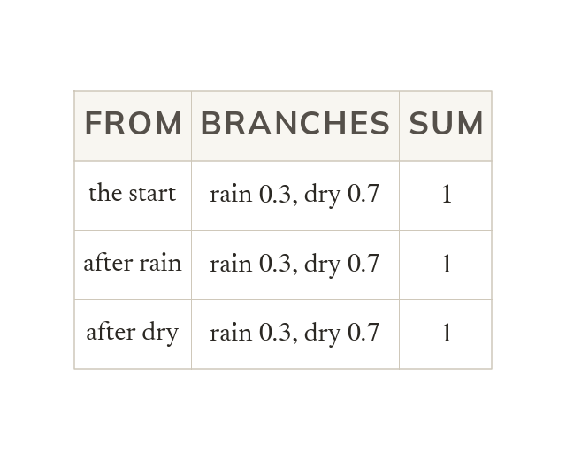
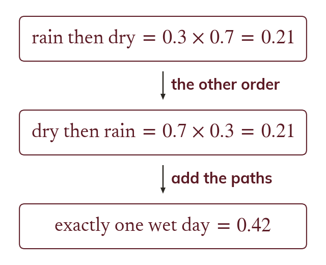
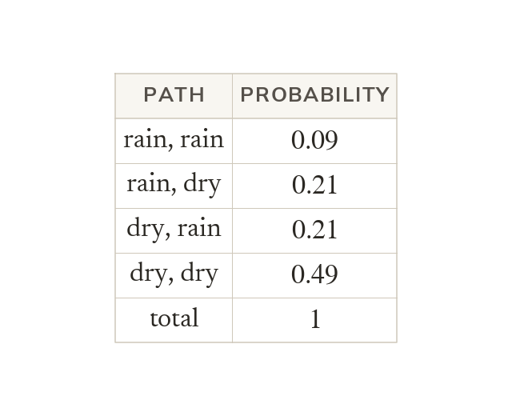
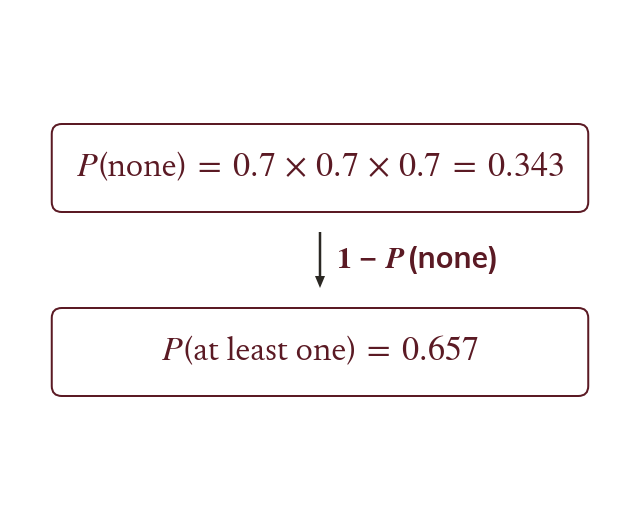
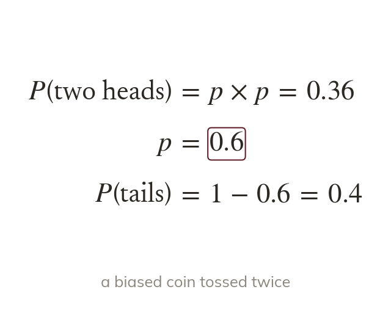
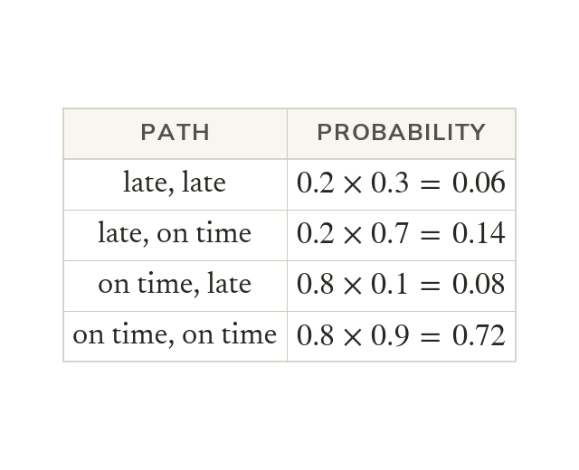

Branches
A tree diagram shows events in order, with one set of branches for each stage. The branches from any one point add to
A tree diagram organises events that happen one after another, including draws where the first item is not replaced. It finishes the chapter, and the binomial distribution in chapter is built on the same multiply-along, add-across method.
Work down the page at your own pace. Write every answer in your book first, then click to check it.
Read each card, then follow the worked examples one step at a time.

A tree diagram shows events in order, with one set of branches for each stage. The branches from any one point add to

Multiply along a path for one sequence of outcomes. Add the paths that give the event.

The probabilities of all the paths add to
So P(at least one) − P(none).
Pick an answer. If it's wrong, the feedback tells you which mistake it was.
Write the blanks in your book first, then tap each one to check.
Read each card, then follow the worked examples one step at a time.

Every path except none gives at least one, so subtract P(none) from
This is quicker than adding seven paths for three stages.

Write the branches as and and multiply along the path the question gives. That makes an equation in

The second branches can depend on the first outcome. Read each one from the branch it follows.
Pick an answer. If it's wrong, the feedback tells you which mistake it was.
Write the blanks in your book first, then tap each one to check.
Finished? Next lesson: 12.S6.1 Probability Distributions.
For each skill, tap the one that is true for you today. Your Revise pages start with anything you mark Not yet.
Your ratings are saved on this device only.
Log in, then search for a code to practise that skill.